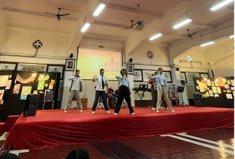
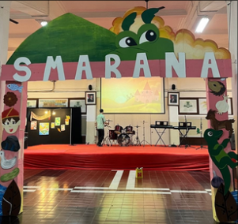
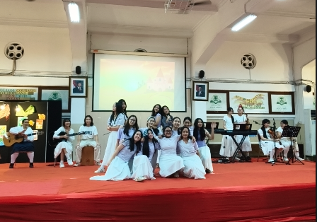

Kensaka, atau Kencana Sambar Kaca, merupakan proyek yang kami susun dalam rangka bazar Integrated Learning (IL) dengan mengangkat cerita rakyat Indonesia. Kami mendapatkan tokoh cerita rakyat Gatotkaca yang berasal dari daerah Pulau Jawa, sebagai pusat inspirasi karena sosoknya yang dikenal sebagai pahlawan kuat, berani, dan selalu melindungi yang lemah. Karakter tersebut terasa sangat dekat dengan semangat kelompok kami, yaitu pentingnya bekerja sama, saling mendukung, dan memiliki keberanian untuk mencoba hal-hal baru dalam setiap prosesnya.
Integrated Learning (IL) atau pembelajaran terpadu merupakan suatu sistem proyek yang menggabungkan para siswi dalam kerja kelompok untuk berdiskusi dan bekerja sama dalam menyelesaikan suatu tugas. Pendekatan ini mendorong peserta didik untuk menghubungkan pengetahuan dari berbagai mata pelajaran serta mengaitkannya dengan pengalaman nyata. Dengan tidak memisahkan setiap disiplin ilmu secara kaku, Integrated Learning membantu siswa memahami konsep secara lebih menyeluruh, membandingkan berbagai sudut pandang, serta menerapkan pengetahuan tersebut dalam kehidupan sehari-hari.
Bazar “SMARANA: Semarak Budaya Indonesia Menghidupkan Cerita Rakyat” merupakan wujud nyata dari penerapan pembelajaran terpadu yang menggabungkan kreativitas, kerja sama, dan pemahaman budaya dalam satu kegiatan. Melalui tema yang mengangkat cerita rakyat Indonesia, kegiatan ini tidak hanya menjadi sarana hiburan, tetapi juga media untuk menghidupkan kembali nilai-nilai budaya dan moral yang terkandung di dalamnya. Setiap kelompok menghadirkan konsep yang unik berdasarkan cerita rakyat yang dipilih, mulai dari dekorasi hingga produk yang dijual, sehingga menciptakan pengalaman yang menarik sekaligus edukatif bagi para pengunjung.
Selain itu, kegiatan bazar ini memberikan banyak manfaat dalam pengembangan keterampilan siswi, seperti kerja sama tim, tanggung jawab, komunikasi, serta kemampuan manajemen dan perencanaan. Proses persiapan hingga pelaksanaan menjadi pengalaman belajar yang nyata, sekaligus mempererat hubungan antarwarga sekolah. Dengan adanya kegiatan ini, diharapkan tumbuh rasa bangga terhadap budaya Indonesia serta kesadaran untuk melestarikannya, sehingga bazar SMARANA tidak hanya menjadi sebuah acara, tetapi juga pengalaman berharga yang memberikan dampak positif secara menyeluruh.